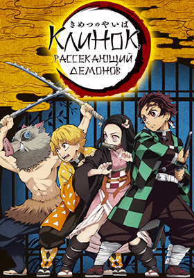
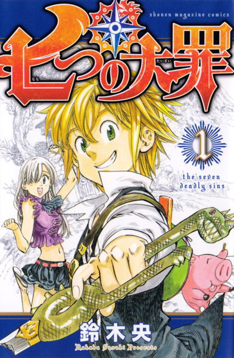
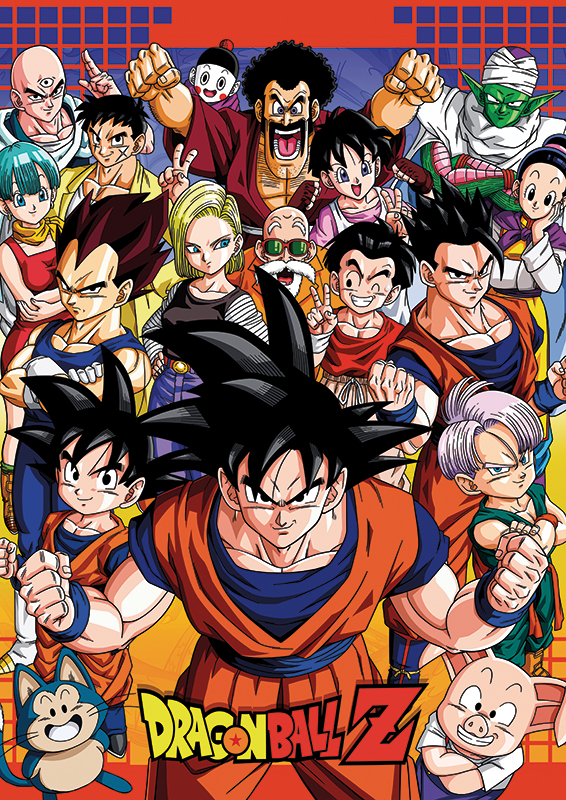
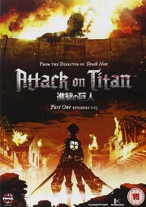

"Клинок, рассекающий демонов" — это аниме о Танджиро Камадо, молодом парне,
который становится охотником на демонов после того, как его семью убивают демоны,
а его сестра Нэдзуко превращается в демона. Танджиро стремится найти способ вернуть
её к человечности. Аниме выделяется качественной анимацией и зрелищными боями,
что сделало его чрезвычайно популярным.

"Семь смертных грехов" — это аниме о группе рыцарей, известных как "Семь смертных грехов",
которые были falsely обвинены в предательстве. Главная героиня, Элен, ищет их, чтобы спасти
королевство от злого Святого рыцаря. Вместе с Меллиодасом, лидером грехов, они сталкиваются
с множеством врагов и раскрывают секреты своего прошлого.

"Драгонболл" — это классическое аниме, основанное на манге Акиры Ториямы. История начинается
с приключений молодого бойца по имени Сон Гоку, который ищет магические дракона, которые
могут исполнять желания. Он встречает друзей, таких как Булма, и вместе с ними проходит
через различные испытания, включая поединки с сильными противниками и защиту Земли от злых сил.

"Атака титанов" — это популярное аниме, основанное на манге Хадзимэ Исаямы. Сюжет разворачивается
в мире, где человечество вынуждено прятаться от гигантских существ, известных как титаны,
которые поедают людей. История начинается с того, как молодой Эрен Йегер, его сестра
Микаса и друг Армин решают сражаться с титанами после того, как их город был атакован.